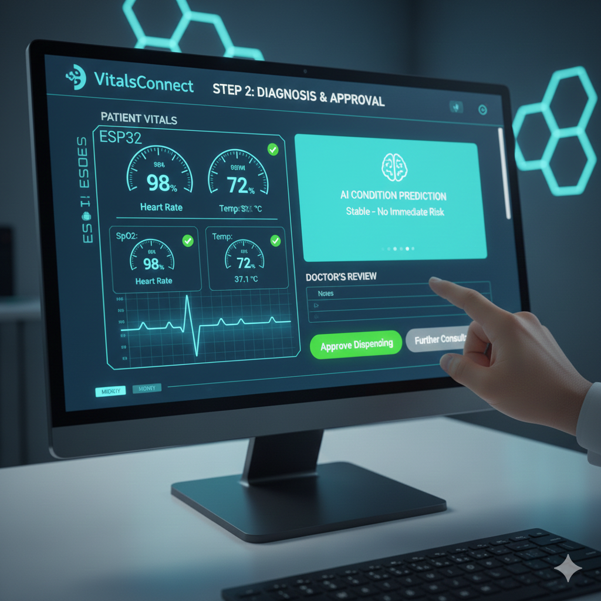
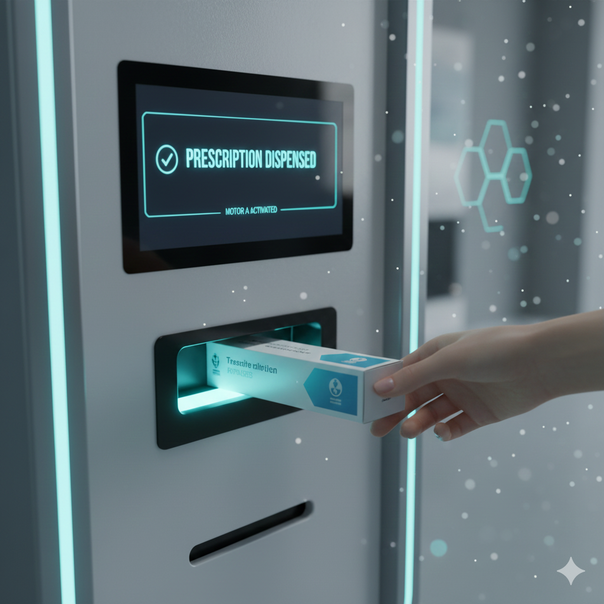

Introducing VitalsConnect: Your **real-time health monitoring system**. Using an ESP32, we provide remote diagnostics, AI prediction, and **automated medicine dispensing** for next-generation care.
See the System in ActionVitalsConnect dramatically improves remote patient management by providing actionable data and control.
Eliminates constant manual vital sign checks (SpO₂, HR, Temp), freeing up physician time.
Reduces diagnostic time with rapid, AI-driven pre-analysis of patient condition and risk factors.
Allows secured, remote activation of Motor A or Motor B for automated medicine dispensing or critical equipment action.
Maintains comprehensive, encrypted patient history and logs for every transaction and vital reading.
Our ESP32-based architecture ensures the VitalsConnect system is **deployable anywhere**, providing high-accuracy monitoring even in remote, underserved areas.
Efficient data capture via the ESP32 ensures low bandwidth usage and fast response times.
Vitals are securely transmitted to the web dashboard, ensuring data integrity and privacy.
**ESP32 & Sensors:** SpO₂, Heart Rate, and Temperature are continuously read and uploaded to the cloud.
**Web Dashboard & AI:** Data is displayed instantly. The AI predicts a condition, and a doctor reviews for final action.
**Motors A/B:** Upon doctor approval, the system triggers the appropriate actuator (Motor A or Motor B) for medicine or device activation.
